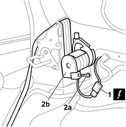
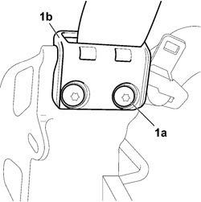

7065B08 REAR SEAT BELT (ONE) WITH PRETENSIONER ON REEL, LEFT OR RIGHT - R.R.
- Path
- Procedures > 70 FITTINGS > 7065 SAFETY BELTS AND ACCESSORIES > 7065B REAR SAFETY BELTS > 7065B08 REAR SEAT BELT (ONE) WITH PRETENSIONER ON REEL, LEFT OR RIGHT - R.R.
- Kind
- repair procedure (removal / refitting; the operation number is the code)
- Applies to
- all engines; all production periods
- Interactive page
- https://sloeber94.github.io/elrnDB-fCrm/en/#/194001193
Applies to: all engines; all production periods
 Removing
Removing
 Refitting
Refitting- Open the rear tailgate.
- Turn the ignition key to the OFF position.
- Disconnect the negative and positive battery terminals.
Description | Connector | |
|---|---|---|
BATTERY |
Op. 7040B42 PROTECTION GRILLE FOR ANIMAL TRANSPORT - R and R
Op. 7040B26 LOAD PLATFORM COVER BLIND - R+R
Op. 7040G46 LOAD COMPARTMENT COURTESY LIGHT - R and R
Op. 7040B24 LOAD COMPARTMENT TOP TRIM (ONE) - R+R
1. Disconnect the pretensioner trigger connection.
2. Undo the fixing bolt (2a) and remove the sensor (2b) from the mount.
Description | Connector | |
|---|---|---|
DRIVER SIDE REAR SEAT BELT PRETENSIONER |
Description | Connector | |
|---|---|---|
PASSENGER SIDE REAR SEAT BELT PRETENSIONER |

Applies to: all engines; all production periods
1. Unscrew both bolts (1a) securing the belt guide (1b) to the mount.
Then remove the rear seat belt with pretensioner from the vehicle.

Applies to: all engines; all production periods
Refitting
Removing- Check that the seat belt and pretensioner, with the trigger connector, are undamaged.
- Position the pretensioner complete with seat belt in its seat on the mount, aligning the retaining pin. Tighten the bolt to the specified torque.
Component | Fastening | dia | Value (daNm) | Validity |
|---|---|---|---|---|
LEFT SIDE REAR SEATS BUCKLE TO CROSSMEMBER | Bolt | M10x1.25x25 | 3,6 ÷ 4,4 |
- Position the belt guide on the mounting and tighten the fixing bolts
- Connect the pretensioner trigger connection.
Description | Connector | |
|---|---|---|
DRIVER SIDE REAR SEAT BELT PRETENSIONER |
Description | Connector | |
|---|---|---|
PASSENGER SIDE REAR SEAT BELT PRETENSIONER |
Op. 7040B24 LOAD COMPARTMENT TOP TRIM (ONE) - R+R
Op. 7040G46 LOAD COMPARTMENT COURTESY LIGHT - R and R
Op. 7040B42 PROTECTION GRILLE FOR ANIMAL TRANSPORT - R and R
Op. 7040B26 LOAD PLATFORM COVER BLIND - R+R
- Reconnect the negative and positive battery terminals.
Description | Connector | |
|---|---|---|
BATTERY |
Topics linked from this page (7)
- 7040B24 LOAD COMPARTMENT TOP TRIM (ONE) - R+R
- 7040B26 LOAD PLATFORM COVER BLIND - R+R
- 7040B42 <x>PROTECTION GRILLE FOR ANIMAL TRANSPORT - R&R</x>
- 7040G46 <x>LOAD COMPARTMENT COURTESY LIGHT - R&R</x>
- A001 BATTERY
- Q022 DRIVER'S SIDE REAR SEAT BELT PRETENSIONER
- Q023 PASSENGER SIDE REAR SEAT BELT PRETENSIONER